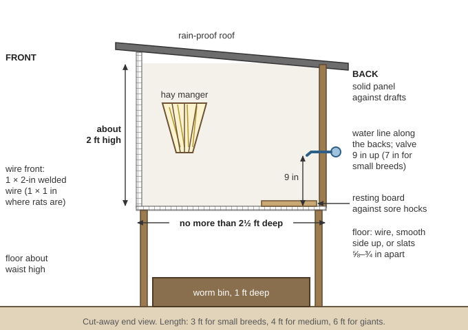
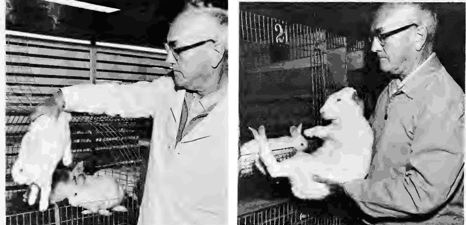
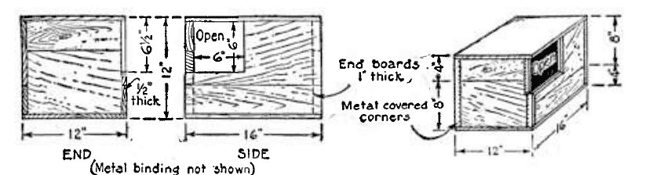
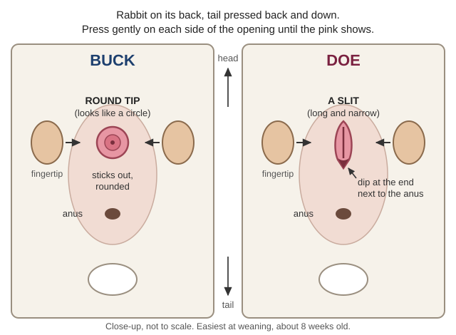
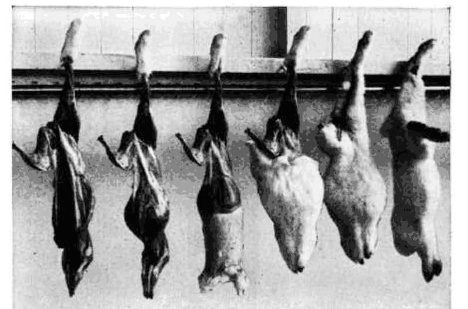
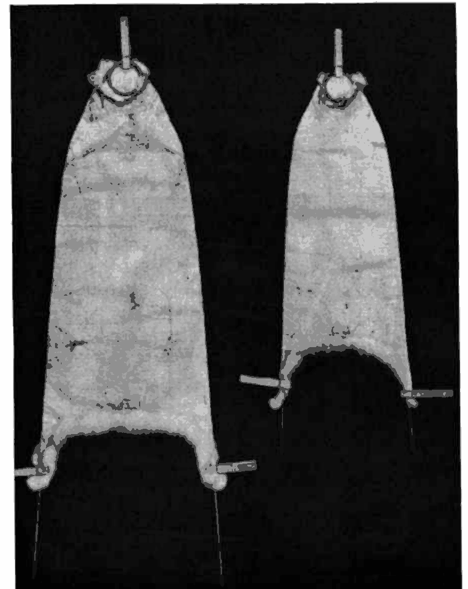

How to keep meat rabbits with no feed store, vet or electricity: breeds for meat and fur, hutches and colony pens, predators and fire season, feeding on hay, grain, roots and wild greens (and which local plants poison them), making hay, water, the breeding calendar and records, kindling, nest boxes, fostering and weaning, growing out to butcher weight, health with no vet, humane slaughter, pelts and Angora wool, manure, how many does feed a family, and keeping the line going for years. The books are in Small-Livestock\Rabbits (USDA Farmers Bulletin 1730 and AIB 358, the Oregon State "Raising Rabbits for Meat" sheets, Peace Corps R-41, Value and Use of Rabbit Manure), Animals\Rabbits-Other (USDA Handbook 309, Raising Healthy Rabbits), Animals\Veterinary (Peace Corps Livestock Manual Vol 4, AVMA euthanasia guidelines) and Wild-Plants (toxic plants). Hens and meat birds are in the Chickens guide.
The short version
Heat kills rabbits. Plan litters for spring, fall and winter, not July–August, and have shade, airflow and water ready before 100 °F days (USDA FB 1730, p. 31).
Every breeding rabbit gets its own hutch, and the doe always goes to the buck's hutch to mate (FB 1730, p. 24).
Feed leafy hay, whole grain, roots, greens, salt and clean water — and change feed slowly. A sudden feed of lush greens can kill (R-41, p. 38).
Never feed heated, moldy or sprayed greens, or plants from where dogs and cats go. Poison hemlock, Scotch broom and foxglove grow everywhere here (WSNWCB, pp. 34, 55).
Clean daily and cull the sick. The common killers come mostly from dirty hutches (R-41, p. 52); snuffles spreads, so cull it.
About 4 does and a buck give four people rabbit twice a week; keep 6 does and 2 bucks(arithmetic, below). Rabbit alone is not a diet — it is very lean. Eat it with fat and starch.
Wear gloves to butcher and throw out spotted livers: sick rabbits can carry tularemia (Trapper Manual, p. 92). The old bulletins' lindane, acids, gasoline and mothballs are poisons (last section).
Choosing breeds and starting stock
Medium and large breeds suit meat and fur; small breeds weigh 3–4 lb, medium 9–12, large 14–16 (AIB 358, p. 5). White skins sell best and take any dye (FB 1730, pp. 7, 57). Most meat rabbits are butchered by 10 weeks (OSU EC 1651, p. 1).
Crosses of two breeds often show hybrid vigor and make good meat rabbits, but their offspring vary too much to breed from (Handbook 309, p. 10). Keep one pure line.
Keep 2–3 does per buck — 6 does and 2 bucks is typical. Buy from several breeders to avoid inbreeding.
Pick thick-boned rabbits as deep as they are wide (body shape). Kits from smaller litters grow larger and more steadily: favor does from smaller-litter lines.
Refuse runny noses, low weight, cloudy eyes, sores, diarrhea, ear mites or matted fur (EC 1654, p. 1).
Start with young stock to learn their habits (FB 1730, p. 7), ideally rabbits already raised outdoors on hay and greens (rule of thumb).
Sides of 1×2-inch welded wire, 1×1-inch where rats are a problem (FB 1730, p. 37). Floors of wire (smooth side up) or 1-inch hardwood slats ⅝–¾ inch apart (AIB 358, p. 10), with a resting board on wire to prevent sore hocks (R-41, p. 26). Perforated metal floors stay wet in fog and long rains (FB 1730, p. 37).
One hay manger can serve two hutches (AIB 358, p. 11). Water bottles or nipples, not crocks. No cedar shavings (EC 1654, p. 2).

One grown rabbit to a hutch shallow enough to reach across, waist high under a rain-proof roof (a diagram drawn for this guide).
Shelter for wet winters and hot summers
A rain-proof roof is a must — rabbits can't stand a soaked coat (FB 1730, p. 35); out of drafts, adults suffer little from cold (p. 32). Give each hutch shade and a choice of sun (AIB 358, p. 8).
Face the shed south or east, with curtains or panels for storms (Handbook 309, p. 12). Drafts cause pneumonia: solid side panels outdoors, or a box with its opening away from the wind (EC 1654, p. 1); cold, damp and drafts together spread respiratory disease (Handbook 309, p. 47).
Summer shade: a lath roof, laths ¾ inch apart running north–south so the sun never sits on one spot (FB 1730, p. 47), or trees.
Colony or ground pens
Colonies save wire and work, but the books keep breeding does and bucks in single hutches:
Does kept together ride each other and go falsely pregnant for 17 days — separate them 18 days before mating (FB 1730, p. 20); a mixed colony lowers conception (R-41, p. 41). A doe left with a buck for hours gets into fights, and you lose track of matings (R-41, pp. 15–16).
Colonies suit weaned fryers, castrated bucks and Angora "woolers" (FB 1730, p. 49). A movable grow-out pen for 8 fryers needs 8 × 4 lb × ¾ = 24 sq ft(arithmetic) — a 4×8-ft frame. They dig and hawks swoop: wire the bottom or lay a 2-ft wire apron, cover the top, and move it daily (rule of thumb).
Hawks swoop into open pens; dogs and raccoons bend wire and open simple latches; rats climb through wide mesh (OSU EC 1654, p. 1). Use clips a paw can't work (rule of thumb).
A predator close enough to smell can make a doe kindle early on the wire, or stamp her kits in the nest (FB 1730, p. 27). Close the rabbitry at night.
Ground pens: hardware cloth buried 12 inches; a weasel fits a ¼-inch gap (Kentucky ID-245, pp. 3, 6).
Cougars: shelter stock at night; Oregon law lets a landowner kill a cougar damaging livestock (ODFW, p. 2). Black bears: an electric fence of at least 3 wires, lowest 7–9 inches up, top 36–42 inches, is the most reliable protection for a coop (ODFW, p. 2) — the same suits a rabbitry (rule of thumb).
Wildfire smoke (PNW 783, p. 10): watch for coughing, open-mouth breathing, watery eyes and weakness. Keep water fresh, cool them, mist down dust, and put off weaning and moving.Fire plan: store hay and bedding in a separate building (PNW 783, p. 8). For evacuation, one rabbit per crate compartment, straw (not sawdust), feed and water (FB 1730, p. 51); keep the crates stacked by the rabbitry June–October (rule of thumb). Routes: Illinois Valley page; fire-proofing: Wildfire guide.
Leafy legume hay (alfalfa, clover, vetch) + whole grain (oats, wheat, barley, rye, sorghum, buckwheat, soft corn — any can replace another) + salt. A typical ration: 4 parts grain to 1 part protein feed, all the legume hay they will eat, a little greens and salt; double the protein for pregnant and nursing does (FB 1730, p. 14).
Protein without soybean meal: legume hay; sunflower seeds, eaten readily (Handbook 309, p. 28); whole soybeans (about 1 lb per 10 lb of grain); goat's or cow's milk, and dry bread soaked in milk for does with litters. Table scraps are fine except meat, greasy and sour food (FB 1730, p. 9).
Roots all year, especially winter: carrots, turnips, beets, mangels, sweet potatoes, Jerusalem artichokes (FB 1730, p. 11). They are 90% water and low in protein: the Peace Corps manual limits them to about 1½% of body weight a day for resting rabbits (Vol 4, p. 300) — roughly 2½ oz for a 10-lb rabbit (arithmetic).
Dry does and resting bucks can live on good leafy legume hay alone; on coarse or grass hay add 2 oz of grain a day for an 8-lb rabbit, 3 oz for 12 lb (FB 1730, p. 15). Pregnant does: all the grain they will eat, plus hay (p. 16).
Doe and litter of seven: grain-and-protein mix rises from 5 oz a day in week 1 (the doe alone) to 20 oz in week 6 (6 for her, 2 for each young) and about 25 oz in week 8, with free hay (FB 1730, p. 16).
Expect 3–9 oz of feed per rabbit a day and slower growth than on pellets — home mixes are hard to balance (OSU EC 1655, p. 1). Feed per pound of gain runs 3:1 on good feed, 8:1 on poor (Peace Corps Vol 4, p. 300).
Too little roughage gives soft droppings and fur-chewing; too much slows the young (Handbook 309, p. 28). Underfed does won't come into heat (p. 33).
Change feeds over about 10 days — ¼ new for 3–4 days, then ½, then ¾ (Handbook 309, p. 32). Feed at the same times daily; rabbits eat mostly at night, and eating their soft night droppings is normal (FB 1730, p. 14).
Store grain and hay rodent-proof, and keep cats and dogs off feed and bedding (tapeworm) (Handbook 309, p. 30).
Fresh, once a day, only what they eat in 4–5 minutes, in a manger, never on the floor.
Dew-wet greens are fine. Greens that sat in a pile and heated are dangerous.
Never gather where dogs or cats defecate (tapeworm, coccidiosis), on swampy ground, or anything sprayed — nor where pigs or cattle graze (Peace Corps Vol 4, p. 299).
Change the diet slowly. A big feed of lush greens can kill rabbits used to dry feed.
Safe forage
Notes
Young grass, clover, vetch, alfalfa
The best; cut grass before it blooms (FB 1730, p. 9)
Dandelion, plantain, blackberry leaves, willow and apple twigs
Common here and widely fed (rule of thumb)
Poisonous plants
📷 Not sure what's growing in the pasture? Photograph it with the plant identifier (under Tools): it suggests a name and flags poisonous groups. Then check that name against this list.
Feed nothing you can't name. The toxic-plant books were written for grazing stock and poultry; treat their lists as poison for rabbits too (rule of thumb).
Yew, oleander, azalea, lily-of-the-valley, wilted cherry or plum leaves, avocado, raw dried beans, green potatoes, rhubarb leaves
Common garden and kitchen poisons
(rule of thumb)
Conflict: the poultry list also names alfalfa and mustards, which every rabbit book recommends — for rabbits, follow the rabbit books. Dry season: grass browns from about July to the October rains, so store hay, grain, squash and roots for summer as well as winter, and keep a patch of watered greens if you can (rule of thumb).
Cut grass before it blooms, while stems are fine and leafy — it has more protein then (FB 1730, p. 9; Handbook 309, p. 28). Legume hay should be fine-stemmed, leafy, green and free of mold (FB 1730, p. 9). Here most grass heads out in May–June (rule of thumb).
Walk the field first and pull tansy ragwort, hemlock and bracken — they stay poisonous in hay (WSNWCB, pp. 24, 34, 36).
Cut in a dry spell after the dew is off (rule of thumb), before the grass goes to seed; let it cure in the field and turn it so the underside sees the sun, or it molds (Animal Traction, p. 186).
It is cured when a twisted handful snaps without giving up juice — 1–3 days in the tropics (same page), 2–4 in our June sun (rule of thumb). Rake it into cocks if rain threatens (rule of thumb).
Store it in a dark, dry shed out of light and wind (same page), away from the hutches.
Good hay is green, slightly brittle and sweet-smelling, with no dirt or woody stems (Animal Traction, p. 186). Gray or dusty hay is moldy (WSNWCB, p. 56); visible mold is "unfit for fodder" (War Office, p. 127). If late rains spoil the curing, make silage instead (Animal Traction, p. 186). To feed, cut coarse hay into 3–4-inch lengths on a bench with a saw slot (FB 1730, pp. 9–10; bench), and use a manger. How much to put up: see "How many does feed a family".
Water
Fresh water at all times. In summer a 10–12-lb doe and her 8-week litter of seven drink about a gallon a day (FB 1730, p. 12); legume hay raises the need (Peace Corps Vol 4, p. 299).
Bottles or nipple valves, not open crocks, which get fouled (OSU EC 1654, p. 2) and keep the chin fold wet until it turns green and sore — if you must use a crock, set it on a brick (AIB 358, p. 23).
Gravity line, no power: a barrel at least 1 ft above the highest hutch feeds a pipe or rubber hose along the backs, with a drinking valve 9 inches above the floor for medium and heavy breeds (7 for small). A half-barrel traps sediment; valves unused for days can stick (Handbook 309, p. 22).
Freezing nights: water that isn't ice-cold at least once a day before feeding, then empty the crocks; coffee cans let you knock the ice out (FB 1730, p. 13).
Wash drinkers in hot soapy water and dry them in the sun — never one rag for every hutch (FB 1730, p. 34). Don't let water pool; it breeds mosquitoes (EC 1654, p. 1), which carry myxomatosis. Clean water: Water Purification guide.
Conflict on age: FB 1730 says medium breeds at 7 months (p. 18), AIB 358 at 5–6 (p. 15). All agree size and maturity matter more than age — on home feed, use the later ages.
A ready doe is restless, rubs her chin on things and has a red, swollen vulva (deep red: about 75% conceive). Take her to the buck in the cool early morning or late afternoon. Mating is done when he falls over on his side; take her home.
If she refuses, try again that afternoon or next morning, or another buck; or hold her for him (how). Use a good buck about 3 times a week at most to keep him long.
Palpate at 12–14 days (AIB 358, p. 16; Handbook 309, p. 39): hold ears and shoulder skin in one hand; slip the other under the belly in front of the pelvis, thumb one side, fingers the other, and move gently back and forth. The young feel like marbles. Light pressure only — squeezing can cause abortion. Unsure? Feel again a week later (how to hold her).

Lift a small rabbit by the loin, a bigger one by the shoulder skin with a hand under the rump; never by the ears or legs (AIB 358, pp. 23–24).
A year's calendar for the valley
Early spring is the natural breeding season; conception drops in late summer and fall (FB 1730, p. 19), when twice as many does need holding (p. 26), and rabbits go temporarily sterile at about 86–90 °F (R-41, p. 42). This plan gives four litters, none born in July–August, rebreeding 42 days after each kindling (arithmetic from a 31-day gestation; dates approximate; jobs are rule of thumb):
Month
Breeding and litters
Other jobs
Jan
Rebreed mid-month; wean the December litter
Hay, grain, roots; break ice twice a day
Feb
Kindle mid-Feb in winter nest boxes
Clean and repair nest boxes
Mar
Rebreed late March — best conception of the year
Spring greens start: introduce slowly
Apr
Wean the Feb litter mid-month; kindle at month's end
Butcher February fryers from mid-April
May
—
Cut hay before the grass blooms
Jun
Wean the April litter late in the month; rest the does
Finish hay; check the bear fence; stack evacuation crates
Jul
No kindling
Shade, water, wet the hutch roofs; smoke watch
Aug
Breed about Aug 20, early morning
Dry grass: feed hay, roots and stored greens
Sep
Kindle about Sep 20, cooling baskets ready
Butcher the last spring fryers
Oct
—
Rains start: check roofs and drafts; spread manure
Nov
Rebreed early in the month; wean the Sep litter
Pick replacements; cull old breeders for roasters and prime pelts
Dec
Kindle early Dec in winter nest boxes
Tan the winter pelts
Records
A card on every hutch and one for every buck — date bred, buck, date kindled, born alive and dead, kept, weaned and their weight — tell you which does to cull and which to breed from (FB 1730, pp. 30–31; a hutch card). Replace a doe that raises fewer than 5 healthy young two litters running (R-41, p. 16). Mark breeders by ear tattoo — tags tear out (AIB 358, p. 18). No tattoo pliers? Pencil the number inside the ear, wipe with alcohol, and prick it in with a taped sewing needle dipped in India ink, avoiding the veins (Peace Corps Vol 4, p. 321). Keep cards dry in a tin (rule of thumb).
📚 Go deeper:FB 1730, p. 18 — gestation, schedule, false pregnancy; R-41, p. 15 — signs of heat and breeding rules; Handbook 309, p. 39 — palpating, with a picture of growing young.
Kindling, nest boxes, fostering and weaning
Nest boxes
Put the box in on day 27 with clean straw (AIB 358, p. 16); kits born on the wire can die (EC 1655, p. 2). An apple box with part of one end cut away, or a nail keg with a board across a third to half of the opening and 1-inch air holes (AIB 358, pp. 10–11): 13 inches across for does over 12 lb, 11½ for 8–12 lb, 10 under 8 lb (FB 1730, p. 43). A few ¼-inch drain holes; a box sunk below the floor feels like a burrow and lets strays crawl back in (Handbook 309, p. 23).
Winter box: set it inside a bigger box with 3 inches of straw packed around, cardboard on the floor and under the lid, two or three small vent holes, and fill it with straw so the doe burrows in. With her fur, kits survive 15–20 °F below zero; replace damp cardboard (FB 1730, p. 44).
Hot weather: a shallow nest; take out some fur and shade the box (EC 1655, p. 2). On hot days put newborns in a cooling basket of hardware cloth (15 × 6 × 6 inches) hung high in the hutch, back in the nest to nurse evening and morning (FB 1730, pp. 31–32).
Take the box out at 2–3 weeks (EC 1655, p. 2); scrub it and sun-dry it before the next litter (FB 1730, p. 34).

A box-type nest with the top of one end open for the doe; its top and bottom come off for cleaning (FB 1730, pp. 42–43).
Most litters come at night. Keep strangers, dogs and noise away (R-41, p. 46).
Next day, while the doe is eating, check the nest quietly and remove dead or deformed kits (FB 1730, p. 27); then leave them a few days — too much handling can make a doe abandon them (EC 1655, p. 2).
Litters average 7–8; leave 6–8 on a doe, 9 on a heavy milker (FB 1730, p. 27). She nurses once a day, at night or early morning, for a few minutes (R-41, p. 40).
If this goes wrong:
Kits cold on the wire: warm them even if they look dead — dip briefly in lukewarm water, dry with a cloth, put them back (R-41, p. 45; Handbook 309, p. 41). Keep a bag of clean spare fur to cover bare litters. Born outside the box: move kits and fur in (rule of thumb).
Litter split between nest and floor: she nurses one group and never carries kits back — you must (AIB 358, p. 18). No milk: kits starve in 2–3 days — foster them. Doe eats her litter: usually poor feed or a scare; give a good doe one more chance (FB 1730, p. 28).
Fostering
Breed several does the same day so litters can be evened out (FB 1730, p. 27). Move kits only to a litter within 3–4 days of the same age, aiming for 7–9 per doe (AIB 358, p. 18), and mark the movers. Your scent won't make her reject them (FB 1730, p. 27); rubbing your hand over the foster doe's fur first can't hurt (R-41, p. 46). Never move kits from a doe with mastitis (Handbook 309, p. 50).
Eyes, leaving the nest and weaning
Eyes open at 10–11 days; kits leave the nest and start eating at 19–20 days — earlier means too little milk or a nest too hot (FB 1730, p. 27). Eyes stuck shut: soften with warm water and gently part the lids (AIB 358, p. 18).
Wean at 8 weeks (AIB 358, p. 18); litters under five can go earlier. Don't wean abruptly — milk left in the glands causes caked breasts (Handbook 309, pp. 43, 50).
Separate the sexes at weaning: pressed gently, a buck's opening shows a round tip, a doe's a slit (FB 1730, p. 28).

Pressed gently, a buck shows a round tip and a doe a slit (a diagram drawn for this guide).
On home feed it is slower: R-41, feeding forage and less grain, counts on butcher size at 14–16 weeks (p. 47).
Each extra pound costs more feed: about 5½ lb of feed to go from 4 to 5 lb live, 7 from 7 to 8, over 10 from 9 to 10 (FB 1730, p. 48) — butcher at fryer size unless you want the pelt.
Leave fryers on the doe until butchering; weaned young held a few days stop gaining (same page). Otherwise use a grow-out pen. Castrating meat bucks only lets them share a pen (Handbook 309, p. 44).
Old breeders become roasters; fatten culls for 2–3 weeks first (R-41, p. 67).
Health with no vet
Quarantine new rabbits a month, downwind, chores last (OSU EC 1654, p. 1) — FB 1730 says at least 2 weeks; take the month.
Clean daily: manure, wet bedding and spoiled feed out; drinkers and feeders washed and sun-dried (FB 1730, p. 34). The common killers — coccidiosis, pneumonia and enteritis — come mostly from poor sanitation (R-41, p. 52). Look over every rabbit at feeding: appetite, droppings, nose, eyes, ears, front paws, hocks (rule of thumb).
Cull: few rabbit diseases can be treated; it is "simpler and safer to destroy a few sickly animals," especially with snuffles. Burn or bury the dead (FB 1730, p. 35). The books' drugs won't be available.
Heat stress
Newborn litters and does late in pregnancy suffer most. Signs: fast breathing, wet mouth, slight bleeding from the nostrils, restless young (FB 1730, p. 31); at worst lying flat with blood-tinged fluid from nose and mouth (Handbook 309, p. 50). Do: move it somewhere quiet and airy, onto a feed sack soaked in cold water, and put jugs of ice or cold water in the hutches (AIB 358, p. 22). On hot, dry days, wetting hutch tops and floors cools the hutch 6–10 °F — it suits our dry summers; in humid heat move air instead (Handbook 309, p. 45).
Pneumonia, "the single greatest cause of death in mature rabbits," comes often at the start of the wet season; prevent it with airflow without drafts and dry bedding (same page) — here, October–November (rule of thumb). Dusty dry mash can set it off (R-41, p. 55).
Ear mites (ear canker)
Signs: head-shaking, ear-scratching, brown, scaly crusts inside the ear (R-41, p. 53) — the commonest parasite after coccidia (Peace Corps Vol 4, p. 340). Treat (same page):
Swab the whole inner ear with vegetable or mineral oil, letting a little run down the canal.
Soak heavy crusts in oil until soft, lift them out with tweezers, oil again. Burn the swabs and crusts.
Treat every rabbit in the herd, mildest first; repeat weekly until clean (R-41, p. 53).
Untreated canker reaches the inner ear and causes wry neck (head twisted, rolling) — cull those (R-41, p. 59).
Coccidiosis
Gut form: mild cases show nothing; worse, diarrhea and no gain; bad cases a pot belly and mucus in the droppings (Handbook 309, p. 50). Liver form: no signs in life; at butchering, white spots on an enlarged liver — throw that liver away (R-41, p. 56).
Prevention is the cure: the eggs need moisture and warmth, so keep floors dry, feeders rabbits can't sit or dung in, drinkers clean, and droppings cleared often. Recovered rabbits often carry it (Peace Corps Vol 4, pp. 337–338). If you stocked a sulfa drug, follow its label.
Sore hocks
Bruised, scabbed or abscessed pads on the hind feet, weight shifted forward — from wet floors, rough wire, heavy rabbits, nervous stamping. Give a resting board or lath platform, or put it on the ground; cull advanced cases (Handbook 309, p. 49; R-41, p. 26). Check feet often (EC 1654, p. 2); sore hocks also stop does conceiving (FB 1730, p. 19).
Other troubles
You see
Likely cause
What to do
Dull, hunched, teeth-grinding, bloated; watery or mucus droppings
A fatal virus that "affects both domestic and wild rabbits"; it has spread across the western states since 2020. "Many times, the only signs of the disease are sudden death and blood stained noses"; some get a fever, stop eating, or show breathing or nerve signs (USDA APHIS, p. 1). It "is very resistant to extreme temperatures" and spreads "from carcasses, food, water, and any contaminated materials", and on people's "clothing and shoes" (same page). No vaccine will be available, so keep it out:
Keep wild rabbits away from your rabbits (p. 1), and keep them off your hay and greens (rule of thumb).
New rabbits apart for at least 30 days, with their own feeders and tools; clean cages and gear with 10% bleach (1 part bleach to 9 parts water) before they go back (p. 2).
Don't touch dead wild rabbits; wash hands before and after the rabbits; don't share equipment with other keepers (same page).
A rabbit that dies suddenly: "A carcass could be a means of spread" (same page) — burn it or bury it deep, away from the rabbitry (rule of thumb).
Killing — practice the grip on a dead rabbit first. AVMA accepts neck dislocation only when done with a high degree of skill; it is harder on heavy rabbits, and devices that hold the head while you pull down on the hips work well (AVMA, pp. 44, 63):
Neck dislocation: hind legs in one hand; thumb just behind the ears, fingers under the chin in the other; stretch and raise the head sharply (FB 1730, p. 52; how to hold it). Big old bucks: pin the neck under a broomstick on the ground, stand on both ends, pull the hind legs up sharply (rule of thumb — a homemade head-holding device).
A heavy blow at the base of the skull (FB 1730, p. 52) is less reliable — AVMA keeps it for emergencies (p. 64). Check death: no breath, no heartbeat, wide fixed pupils (p. 63).
No feed the day before (R-41, p. 77). Work in the cool morning, in gloves(rule of thumb).
Hang it by a hook through the hock tendon of one hind leg; cut off the head at once to bleed.
Remove tail, free hind foot and front feet; slit the skin inside each hind leg to the tail and peel it off like a sock, leaving the fat on the carcass — fat left on the skin burns the pelt (steps).
Slit the belly; remove guts and gall bladder, keeping liver and kidneys; don't spill the bladder on the meat (R-41, p. 79). Heart, kidneys and liver are good food.
Rinse in cold water no more than 15 minutes; cool overnight before cutting up. Cut with a knife, not a cleaver — rabbit bones splinter; a fryer makes 7 pieces (cuts).
Yield: a 4–4½ lb fryer dresses to 50–59%, 78–80% of that edible (p. 47) — about 1¾ lb of meat (arithmetic).

Skinning and gutting, step by step from right to left, each rabbit hung by one hind leg (FB 1730, p. 54).
Check liver and spleen: white spots on the liver = coccidiosis; discard the liver (R-41, p. 56). Liver and spleen both enlarged and spotted can be tularemia, which people catch from skinning and undercooked meat (Trapper Manual, p. 92) — if the rabbit was sick, bury it whole, scrub up, and always cook rabbit well. Domestic rabbits kept free of ticks and fleas don't get it (Handbook 309, p. 48).
Keeping the meat: pressure-can it, soaking dressed rabbit 1 hour in water with 1 tablespoon salt per quart first (USDA canning guide 5, p. 5), or dry thin strips (CVM, p. 90) — 16 oz raw makes about 4 oz jerky (PNW 632, p. 7). In summer, butcher only what you'll cook or can that day (rule of thumb).
Prime or not: stroke a live rabbit tail to head. A prime coat feels dense and flies back evenly; long and short hairs lying unevenly mean a molt. Skins from rabbits under 4 months are rough, thin and weak; the best pelts come from mature rabbits in the colder months (FB 1730, pp. 57–58; prime and unprime). Butcher culled breeders in November–February for fur and use fryer skins for linings and mittens (rule of thumb). Skins make fur garments, glove linings and hat felt (FB 1730, p. 5).
While warm, pull it flesh side out onto a shaper of 5 ft of No. 9 wire, all four legs on one side to spare the back fur. Smooth out wrinkles; don't stretch it hard (pelt on a stretcher).
Next day check that edges dry flat, straighten the front legs, scrape off fat.
Dry in shade with moving air, never in sun or by a fire. Don't salt rabbit skins for drying. Store them hung in loose bundles, cool and dry, away from rats and mice.

Skin flesh side out on the wire shaper, all the legs on one side so the back fur stays whole (FB 1730, p. 55).
Conflict: R-41 salts skins before tanning (p. 80). Air-dry skins you will store; skins going straight into the tan can be salted.
Tanning:salt-alum — see the Clothing & Leather guide (FB 1334, p. 27; FB 1730, p. 61). First soak the dry skin soft in several changes of cool water and scrape off all flesh and fat — but don't leave it wet longer than needed or the hair slips (p. 60). Work the skin while it dries, not after, or it dries stiff (p. 61).
Angora wool (FB 1730, pp. 49–51; Handbook 309, pp. 59–61): grows about 1 inch a month; shear or pluck every 10–12 weeks from 8 weeks old, for 14–15 oz a year. Scissors flat against the body, starting at the rump; never shear a pregnant doe's belly. In winter leave ½ inch, and shelter newly shorn rabbits at 30–40 °F. Shear on time, or swallowed wool forms a wool block that starves them (FB 1730, p. 33). Spin it on a wheel (p. 51).
Manure for the garden
Rabbit manure has about 2% nitrogen — more than most farm manures — and won't burn plants: dig it straight in (USDA Rabbit Manure, pp. 4–5), even on the crops you grow for the rabbits (Handbook 309, p. 53).
A doe and her litters make about 6 cubic feet a year (9 with bedding); a buck about 3 (5 with bedding). A cubic foot weighs about 28 lb fresh, 16 lb dry (FB 1730, p. 34).
Raise earthworms under the hutches (vermicomposting): bins the size of the hutch and 1 ft deep on bare ground, kept moist, cut odor and flies, and need emptying only every 5–6 months (Handbook 309, p. 53; Rabbit Manure, p. 5).
Compost: alternate 3–12-inch layers of garden waste (nothing diseased) and manure, tramp, wet just enough, cap with 3–4 inches of soil to hold the nitrogen, and cover against rain; fork over a smoking pile and wet it (Rabbit Manure, p. 6). Manure left in rain-soaked piles loses its value (FB 1730, p. 34). More: Sanitation guide.
How many does feed a family
(Our arithmetic from the sources.)
A doe at full production raises about 28 fryers a year — roughly 60 lb of carcass, 48 lb of meat (FB 1730, pp. 19, 47).
Rabbit twice a week for four people ≈ 100 fryers ≈ 4 does + 1 buck. On home feed expect more like three litters of about 6 (rule of thumb), so keep 6 does and 2 bucks to cover losses and smaller litters.
Feed: each pound of fryer takes 3½–4½ lb of total ration, counting the doe's feed (FB 1730, p. 47). 100 fryers of 4¼ lb ≈ 1,500–1,900 lb a year, plus the bucks — call it a ton of hay, grain and roots, and up to twice that on poor feed (Peace Corps Vol 4, p. 300). Plan on roughly half hay and greens, half grain and roots (rule of thumb).
Manure: 6 does × 9 + 2 bucks × 5 ≈ 64 cubic feet a year (FB 1730, p. 34). Work: about 10 hours a year per doe in a commercial rabbitry (p. 47) — much more when you cut greens and hay by hand.
Don't live on rabbit. It is high in protein but low in fat (EC 1651, p. 1). People who live mainly on lean meat get "rabbit starvation" within 1–2 weeks — nausea, diarrhea, weakness and a craving for fat that more lean meat won't fix. Keep protein under about a third of calories and pair rabbit with fat (egg yolks, chicken fat, lard, nuts) and starch (rule of thumb). See the Food Security guide.
Keeping the line going for years
Inbreeding doesn't create defects — it uncovers hidden ones, quickly (FB 1730, p. 20; Handbook 309, p. 10). Beginners inbreed just to avoid getting a new buck — get the buck (FB 1730, p. 21).
Keep at least two unrelated bucks and trade bucks with neighbors every few generations (rule of thumb); buy in a good buck now and then (R-41, p. 17).
With no new blood, keep three doe families (A, B, C): A bucks serve B does, B bucks serve C, C bucks serve A; each daughter stays in her mother's line (rule of thumb).
Save about one young doe and one young buck a month for every 12 working does; good does last 2–3 years, bucks 1 to 5½ (R-41, p. 17).
Pick from does that kindle regularly in every season (FB 1730, p. 19), raise litters well on home feed, and have never had snuffles (Handbook 309, p. 52). Look for calm, stocky rabbits that eat well (R-41, p. 67); disease resistance and long life are inherited too (p. 59).
Good care alone doesn't improve a line — selection does (FB 1730, p. 21). Over generations, picking the ones that thrive on home feed breeds a herd that does well on it (rule of thumb).
Keep records of matings and litter sizes (a hutch card); breed from the best mothers.